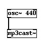
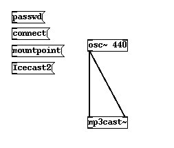
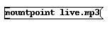
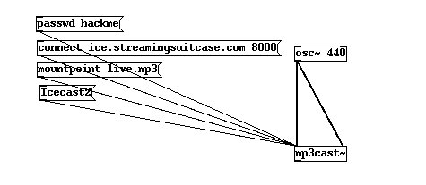
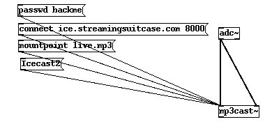
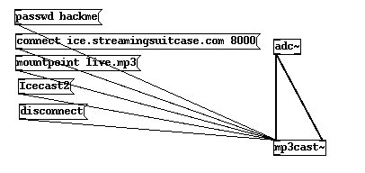

Streaming Audio
We shall look at streaming mp3 to a streaming server using Pure Data. You should have a running version of Pd installed.
Additionally, you should have access to a streaming server.
If you have somebody that can lend you a server for this trial, then you will need to know to from them the following:
- what mountpoint do you use?
- the hostname or IP Address of the server
- the password for sending streams
- the port number of the server
- the type of server (Icecast2? Icecast1? Darwin? Shoutcast?)
1. Create the mp3cast object
Now create a new object and type mp3cast~ :

If all is installed well the object will look like the above. If there is a problem the object will be surrounded by dotted lines, this means that the object couldn't be created.
2. Connect an osc~ object
If all is ok, you can now add an audio object to the page so that we can send some audio to the signal inlet of the patch. We will use the osc~ object.
The osc~ object is created in the same way and it we will also give it a parameter. This parameter sets the frequency of the osc~ sound wave, and we will use 440 (Hz). Then attach the signal outlet of osc~ to the signal inlet of mp3cast~:

Now we have a mono input to mp3cast~ but we want a stereo connection, so we will connect the same signal outlet to right signal inlet of mp3cast~ :

3. Settings
We now want to send our server details to the mp3cast object so first we need to create 4 empty messages boxes. Put them on your document like so:

Enter the following into these newly created message boxes. One should contain the following:
passwd
another should have:
connect
the third should have:
mountpoint
and the last:
icecast2

OK, so now we are ready to enter the details of our streaming server.
In the passwd message box type a space after 'passwd' and enter your password. In this example the I will use the password 'hackme', and I would type this:
passwd hackme
So I get this:

Then we enter the mountpoint in a similar fashion into the mountpoint message box . I will use the mountpoint live.mp3.

note : you do not need to enter the suffix ".mp3" in the mountpoint.
We also wish to enter the hostname and port of the streaming server. I will use the non-existant ice.streamingsuitcase.com as the hostname and port 8000:

note : do not put in the leading http:// in the hostname.
Lastly, we have the icecast2 message box. This defines what kind of server you are logging into. If you are using an Icecast1 server you would instead have icecast in this box. Similar for shoutcast. If you are streaming to a Darwin server use icecast.
Connect all the control outlets from these message boxes to the left control inlet of the mp3cast~ object box. You may have to move the boxes around a bit to make space :

4. Start the Stream
Now, to start to stream you must goto run mode and press the boxes in the following order:
- press passwd to set the password
- press icecast2 (or whatever server type you are using) to set the server type
- press mountpoint to set the mountpoint
Now...this process has loaded mp3cast~ with the server settings. Click the connect message box and you should be streaming!
To test connect with your favourite player using the the following syntax :
http://hostname:port/mountpoint
In my case this would be:
http://ice.streamingsuitcase.com:8000/live.mp3
5. Streaming from The Mic
Lets replace the osc~ with adc~ like so:

The adc~ object takes the input from your computers sound input. adc is short for Analog Digital Converter. If you now stream the sound will be coming from your soundcard input!
6. Disconnect
Incidentally, if you need to disconnect the stream make a new message box , type:
disconnect
then connect this to the left control inlet of mp3cast~ , return to run mode and press it.
